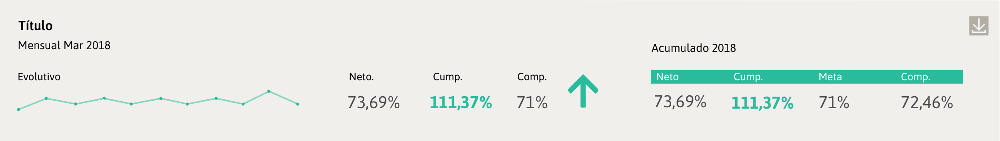

Resumen que demuestra el progreso de algún proceso o producto para cuantificar su grado de cumplimiento.
CRITERIOS DE ELECCIÓN
Existen tres diseños de kpi en esta biblioteca. El criterio de selección de cada uno de ellos dependerá de los datos que se quieran representar.
Variaciones
El siguiente kpi se recomienda utilizar en un ancho de 4 columnas.
El siguiente kpi también se recomienda su utilización en un ancho de 4 columnas.
El kpi a continuación, al tener más datos se recomienda utilizar con un ancho de 12 columnas

Uso del color
Cada uno de ellos cuenta con tres versiones de color según la definición en la paleta de semáforo. Los colores dependerán de los valores de los datos agrupados por categorías de alto, medio o bajo. Si los datos tienen más de tres categorías en esta escala de valores, se recomienda agruparlos en tres (alto, medio y bajo) con sus respectivos colores (verde, amarillo y rojo) y utilizar la simbología de flechas en distintos ángulos para distinguir categorías intermedias.
ANTERIOR